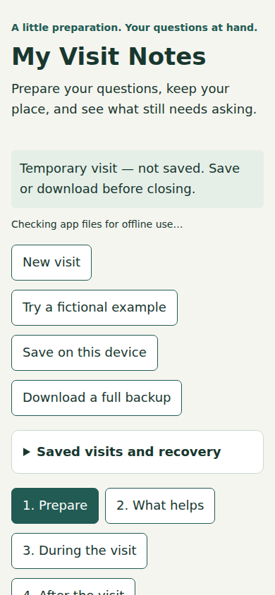
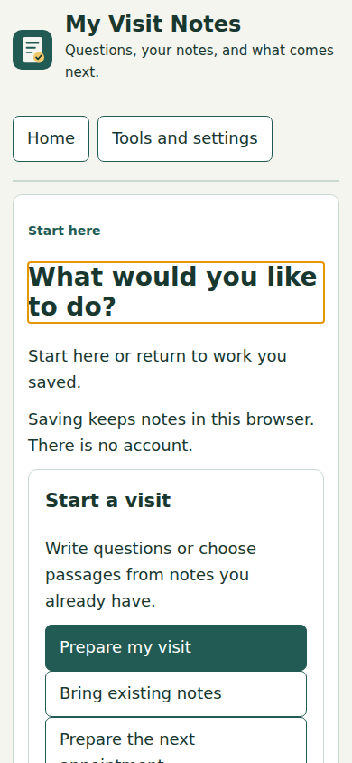
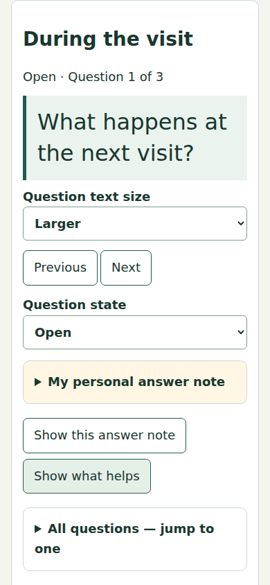
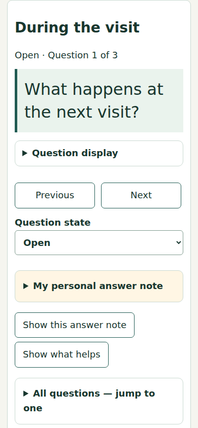
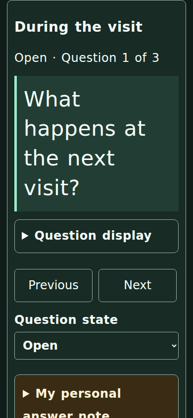
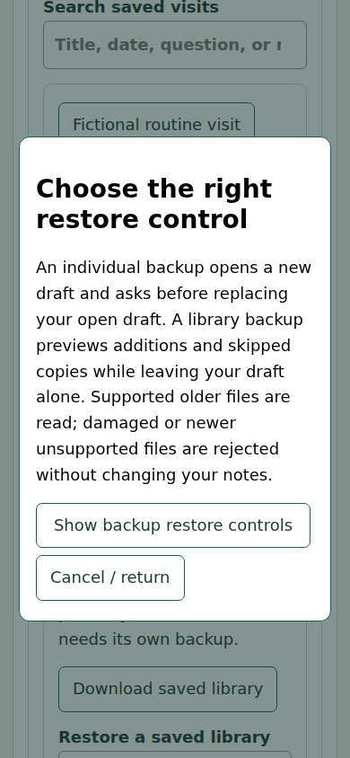
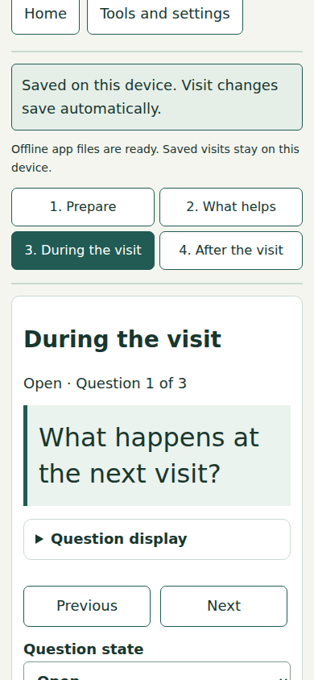

01 / 12
What this release finishes
Open the app, prepare a visit, use it, return later, and recover the notes if needed.
The appointment-to-appointment features already existed. This release improves the starting screen, phone layout, reading choices, recovery guidance, and installation. It does not add another diagnosis-specific app or expand into medical advice.
The completion decision is based on software checks with fictional content. It does not establish that people find the app easier than paper or their usual notes tool. Participant review remains deferred.
02 / 12
A clearer place to start
Before, opening the app immediately showed the working controls and an empty editor. The phone release introduced prepare a visit, open a saved visit, and try a fictional example. The current build also offers Bring existing notes. The opening explanation says where notes stay and why a backup matters.
The editor appears only when needed. Recovery and deletion remain available but sit inside closed sections. This reduces the number of decisions presented before someone has written a question. Whether it reduces effort in practice remains untested.


03 / 12
Keep the conversation in view
The phone layout uses a compact header and a two-column step selector. The question remains large and wraps. Previous, Next, and the question state are grouped together. Optional question-size controls are behind Question display.
The controls follow the question rather than covering the screen in a fixed overlay. This avoids placing a permanent bar over an editor when typing space is limited. Long questions remain scrollable. Navigation never marks a question Answered.


04 / 12
Change the display, not the words
Reading choices offers three text sizes, two spacing choices, and three contrast choices. Changes are visible immediately. Saving the choices explicitly keeps them for future visits and browser sessions.
These settings are stored separately from visit data. Resetting them does not remove notes. A failed settings save leaves the current display usable and reports that the choices were not saved. No text is rewritten or simplified automatically.

The automated checks measure primary text contrast and inspect layout. They do not certify every colour pairing or replace screen-reader and real-device review.
05 / 12
Make saving status useful
| Message | What it means | What to do |
|---|---|---|
| Temporary visit | The draft exists in this page, not the saved library. | Save or download a private backup before closing. |
| Saved on this device | The latest edit was written to this browser. | Continue; keep a backup against browser-data loss. |
| Changes not saved | The latest work is not safely stored. | Keep the page open and back up this draft before reloading. |
Text carries the meaning; colour only supports it. A library backup includes saved visits, not failed edits or an unsaved draft. The individual backup protects the open draft.
A phone browser may close without showing a warning. The product does not promise to recover work that was never saved or backed up.
06 / 12
Guide recovery before changing anything
Help me recover my notes asks what happened before presenting a destructive control. Each branch explains the available next step and can be cancelled without changing saved data.
- Cannot find notes: clear the search and check the same browser/site.
- Browser data was cleared: restore a downloaded backup; there is no server copy.
- Have an older file: use the matching restore control and inspect the preview.
- Cannot save or have conflicting copies: protect the draft first; keep differing library copies separately.
- Saved data is damaged: download unreadable data before an explicitly confirmed reset.

Files that are damaged or use an unsupported newer format are rejected without replacing notes. When no browser copy or backup remains, the app says recovery is not possible.
07 / 12
One complete checked journey
- Start from a clean browser and write two fictional questions.
- Save private preparation notes, use the visit, mark states, and add a personal next step.
- Close the entire browser and reopen offline.
- Verify questions, current place, states, actions, and private notes.
- Download a private library backup and restore it into a clean browser.
- Prepare another visit from selected items.
- Verify the original is unchanged and private notes were not copied or shared unexpectedly.
This is a software test, not a participant session. The fictional walkthrough explains how to repeat it without real medical information.
08 / 12
Installation checked separately from phone emulation
The app includes a manifest, icons, installation guidance, and cached offline help. The install button appears only when the browser supplies a prompt; refusal and failure keep browser use available.
Recorded installation evidence: a real standalone window was observed. The test uses full desktop Chromium in a temporary profile and temporary integration folders, installs the app, selects standalone opening, then launches it offline with the same saved notes. It does not force the display-mode media query to claim success.

This is not an Android or iOS home-screen check. The separate install-prompt UI tests use simulated browser events and are labelled as such. Installation support varies by browser; the product keeps a browser fallback.
09 / 12
Preserve the earlier work
The saved visit format remains version 2. Reading settings have their own key. A real previous-release fixture is used to install the earlier offline shell, save a visit, update to this release, and confirm the saved record is unchanged when opened.
The existing suites still check selective sharing, personal next steps, carry-forward, duplicate imports, failed writes, two-tab conflicts, and version 1 backups. Private preparation notes never enter summaries; carry-forward copies selected text and action details but not private or answer notes.
Updates wait for old app tabs to close after saving. They do not force a reload. The cached files now include help, icons, and the reading and installation code.
10 / 12
What the recorded checks show
24/24 original browser checks, 15/15 continuity checks, 12/12 phone-release checks, and 100 model checks passed in the current result files. Browser script errors: 0.
The unchanged communication-card suite is also rerun as a separate regression check. The release audit compares recorded source hashes, rebuilds the archive identically, and opens the extracted app and presentation.
Phone results and installation evidence · Model results · Commands and limits · Requirement-level evidence
Phone-suite browser: 145.0.7632.6. Node: v18.19.1. Recorded: 2026-09-16T21:53:29.915Z. Every screenshot here comes from the actual previous or current app, using fictional content.
11 / 12
What remains unproven
Phone dimensions and touch input are emulated. Reducing the viewport represents typing space; it is not a native phone keyboard test. Rotation and tab switching do not reproduce every operating-system interruption.
No physical Android or iOS install, screen-reader review, participant comparison, payment test, or long-term adoption study has occurred. Whether the changes reduce effort or confusion remains unknown.
Backups are unencrypted and imports are limited to 10 MB. Browser storage can be cleared externally. A real phone needs a reachable HTTPS address; localhost on that phone is not the development computer. This release does not publish a public site.
12 / 12
The handoff
Open My Visit Notes · Detailed product requirements · Offline help and recovery · Fictional walkthroughs · Earlier product presentation
Extract the release and serve the extracted root folder:
python3 -m http.server 8765 --bind 127.0.0.1
Then open the address in the README. No package installation is required to use the app. Development checks use the parent project's Playwright installation.
Download the release · File hashes · Start instructions
The engineering goal ends with a verified local release. Participants and public deployment are not prerequisites, and no claim of proven user benefit is made.